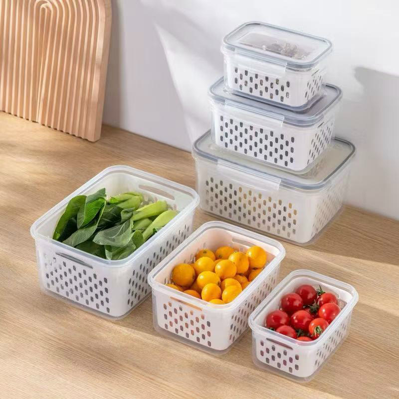
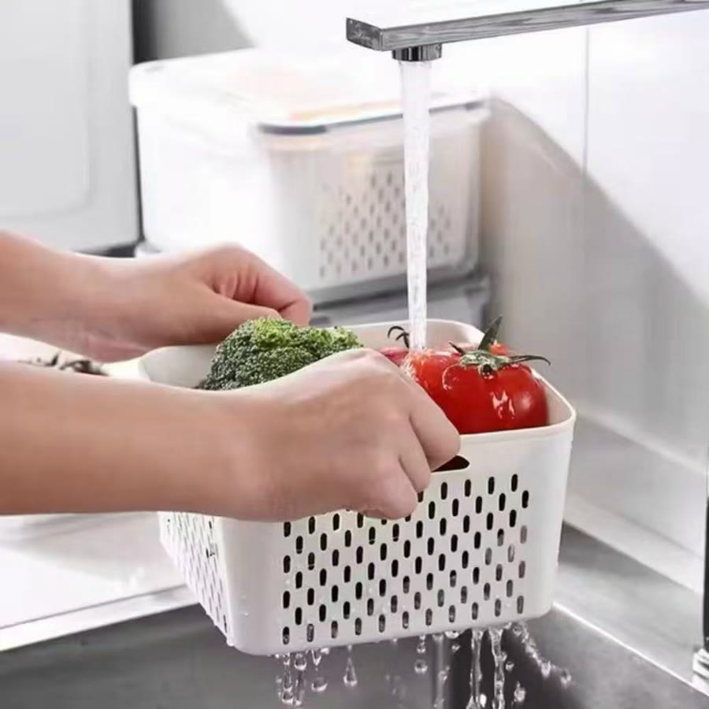
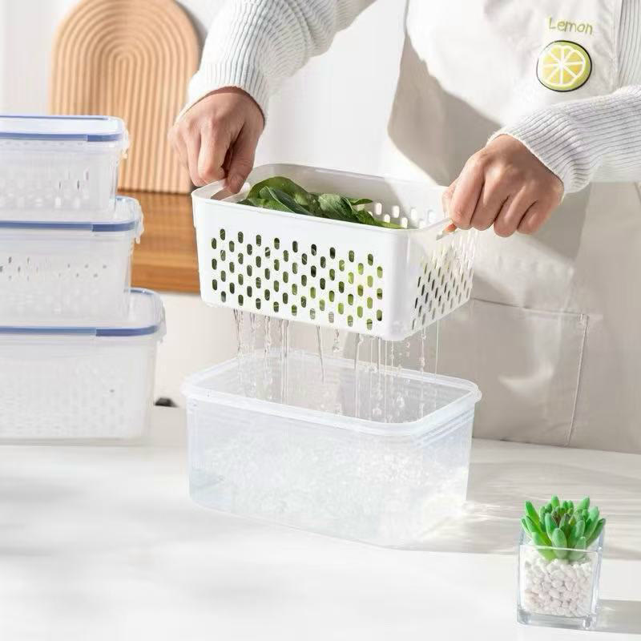
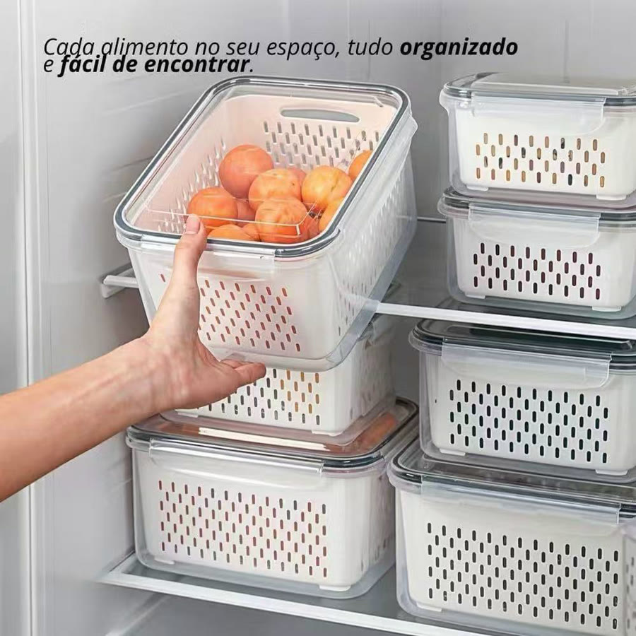
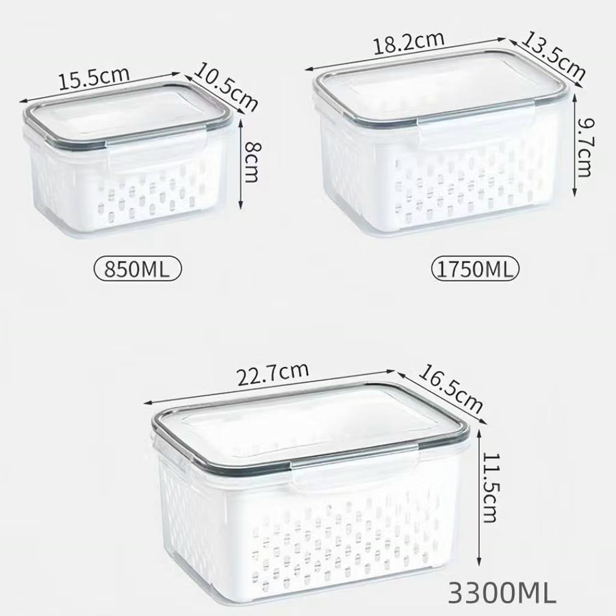
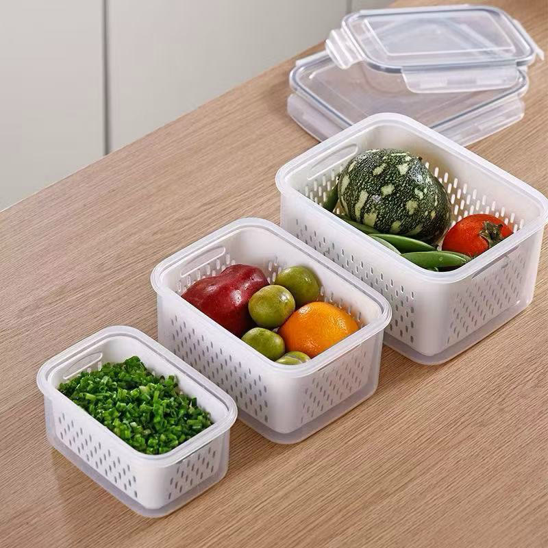

Achado nº 111
Potes com cesto escorredor para frutas e verduras






O que diz a página oficial do produto
- São potes transparentes com tampa e um cesto escorredor branco por dentro, para guardar frutas e verduras na geladeira
- Pelas fotos, vêm em três tamanhos: 850 ml, 1750 ml e 3300 ml
- O cesto sai do pote: dá para lavar a verdura no próprio cesto e escorrer
- Segundo o anúncio, o cesto deixa a umidade escorrer longe do alimento, para durar mais
- Segundo o anúncio, a tampa tem ventilação ajustável
- Segundo o anúncio, servem para geladeira e micro-ondas e vão na lava-louças
- O anúncio vende kits de quantidades diferentes
- Na Shopee, tem nota 4,8 com mais de 4 mil avaliações
Link de afiliado: se você comprar por ele, a Achadaria pode receber uma comissão, sem custo extra para você. Preço, estoque e entrega são da loja e podem mudar; confira lá antes de comprar.